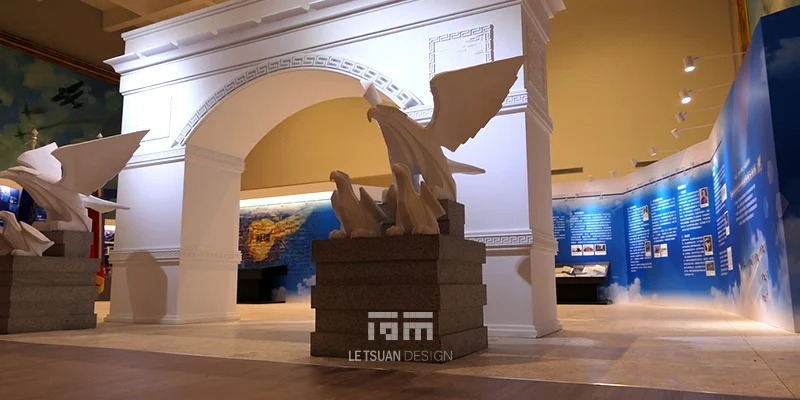
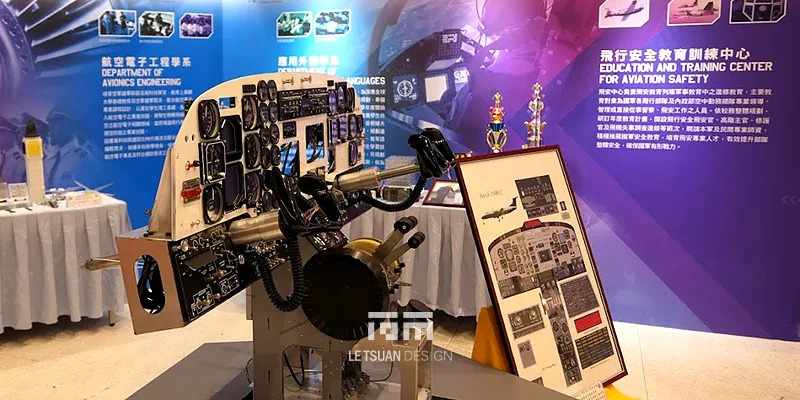
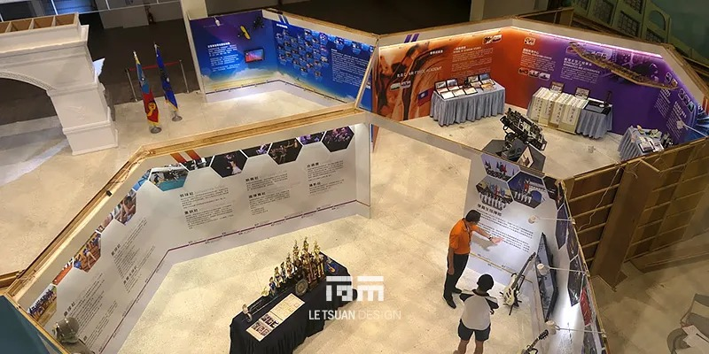
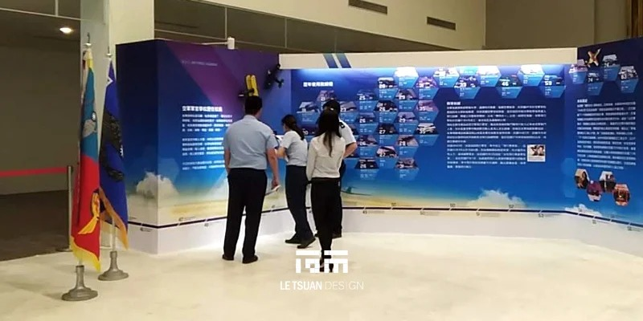
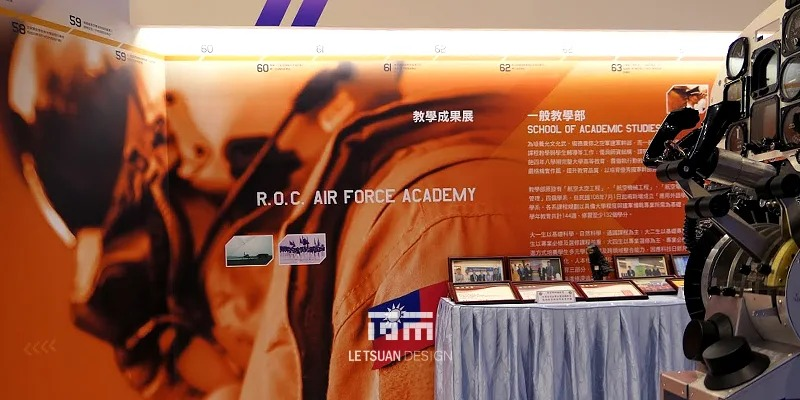
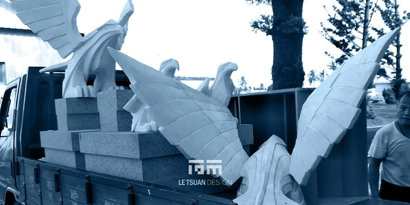
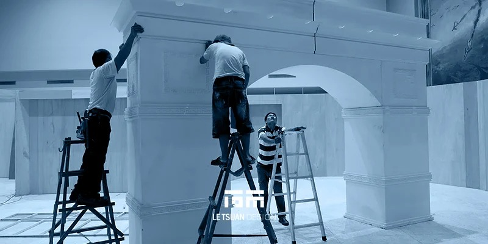

展覽 — 2019空軍軍史館
九十年的天空，
值得被好好述說 光之長廊：空軍軍官學校史特展
整個展館以時間軸串起動線，讓人一步步從過去走到現在。
序展區——築夢藍天
一進門就是氣勢十足的視覺牆面，航空幾何線條先把「空軍」意象立起來，再帶觀眾往下走。
建校與抗戰歲月區
老照片、文獻、文物一件件陳列，不多加修飾，讓那個艱苦年代裡空軍健兒的韌性自己說話。
空軍現代化與新一代戰力展區
從主力戰機模型到裝備演進，看得出空軍怎麼從草創走到今天的規模與戰力。
未來展望與教育傳承區
把官校育才的使命與未來航太科技接上，讓展覽不只回頭看，也往前看。
視覺美學與展陳細節
歷史軸線牆——以線串史，以時記事
這面牆是整個展場的敘事骨架。空軍九十年來的每一件大事，依時間先後標在牆上，一條線貫穿全牆，把散落的節點串成一段完整故事。從建校、抗戰、遷台整軍，一路到今天，每個時間點都是線上的座標。觀眾沿牆走過去，其實就是走過一遍空軍的九十年——不是在看資料，是在走時間。
飛翼意象與光影運用
天花板採用機翼流線造型，配上打光，做出雲層天際的效果。空間本身就在講「空軍」，不需要靠文字說明。
精緻櫥櫃與立體展示
展櫃使用高透光抗反射玻璃，燈光特別控制，讓勳章、文物、服飾被好好看見，同時兼顧文物保存需求。
實體模型與情境還原
展區中間擺了戰機模型與情境還原，不是純平面掛牆，現場感與臨場感明顯更強。
結語
這個展館做的不只是把歷史資料擺出來，而是把軍事文化的重量，與現代展覽設計的手法揉在一起。走進去的每個人，應該都能感覺到那股從九十年前一路傳下來的、空軍的那股勁。
有專案想討論？
聯絡我們






